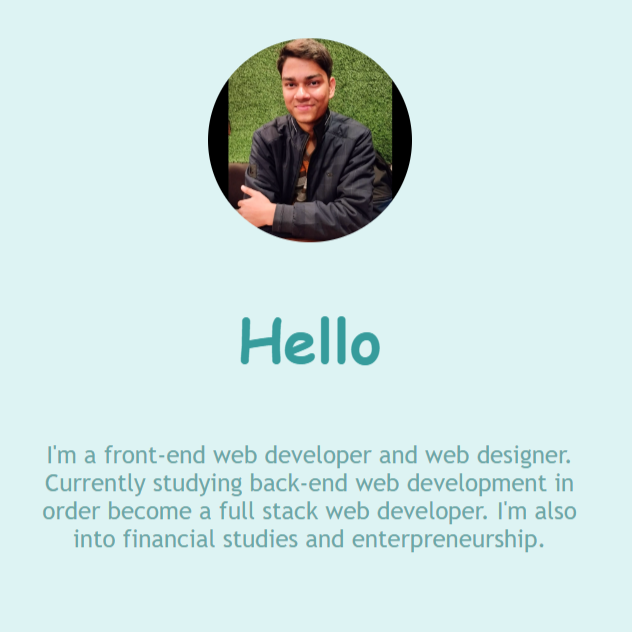
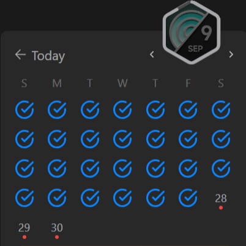
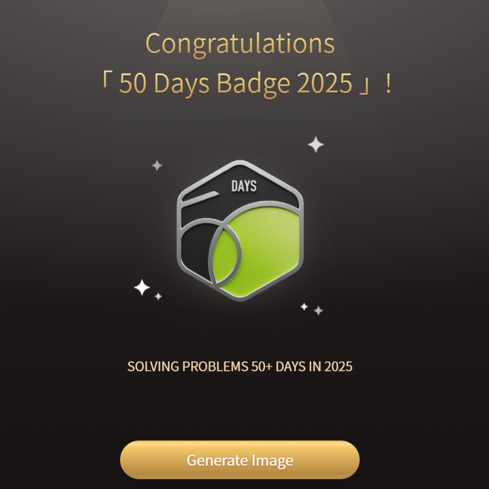
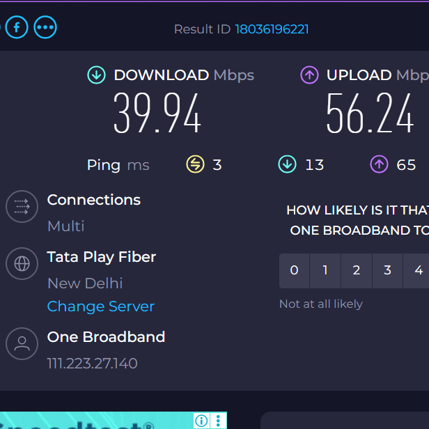

Past Projects
Portfolio Home Page

LeetCode Calender

Badge LC-50 Days

Twitter-Complaint Bot

This portfolio is a collection of my projects, skills, and achievements as a developer. It reflects my journey in programming, showcasing work in Python, web development, and problem-solving. Each section highlights my growth, creativity, and dedication to building impactful solutions through code and continuous learning.
This LeetCode calendar showcases my daily problem-solving journey, tracking consistency and progress in Data Structures and Algorithms. Each completed day represents a challenge solved, reflecting dedication toward improving my coding skills. It’s not just about streaks—it’s about growth, discipline, and becoming a better programmer over time.
The LeetCode 50 Days Badge marks my commitment to consistent coding practice for 50 consecutive days. It reflects dedication, discipline, and continuous improvement in problem-solving and Data Structures & Algorithms. This milestone is a step forward in sharpening my skills and preparing for challenging programming opportunities ahead.
This Twitter Complaint Bot automates posting complaints on Twitter using Selenium. Designed to save time and effort, it navigates the platform, logs in, and tweets messages programmatically. It demonstrates my skills in Python automation, web interaction, and problem-solving through practical, real-world applications of programming